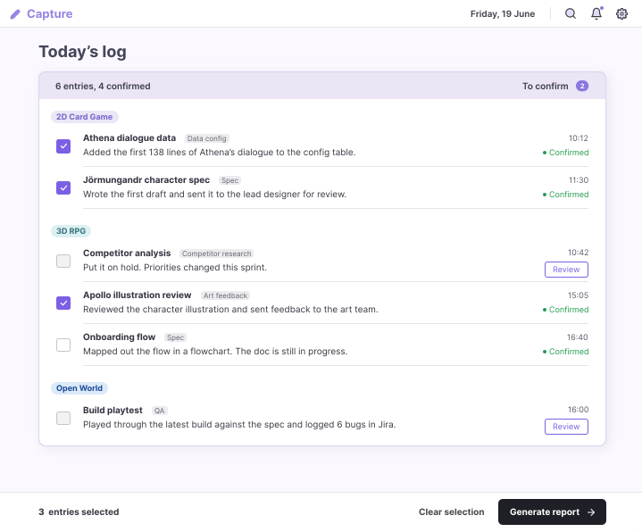
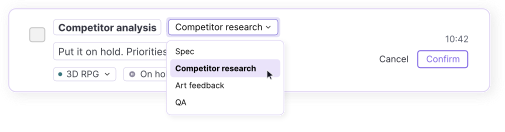
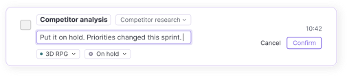
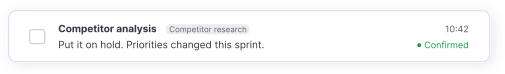
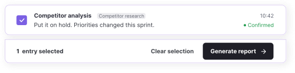
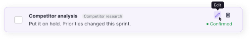

The problem
At work, I had a morning stand-up every day, a daily report due before I finished, a weekly report every Friday, and a monthly report. They often covered the same work.
My work log for preparing reports
I started keeping a work log so I could record my work once and reuse the notes with AI for different reports, instead of starting from scratch each time. When I needed a report, I copied the relevant entries from Notion into an AI tool to generate it.

Work-log structure
I found that good work reports focused on results and numbers. As I used my Notion log, I kept revising its structure to help me measure my output. Project and work type let me group entries and quickly count what I had completed, for example, the number of specs written or feedback rounds completed for each project. Dates let me filter those entries to a specific reporting period.
Work type
Grouping entries by work type let me quickly calculate the numbers I needed for each report, such as the number of specs written during the selected period.
Project
Grouping by project kept reports relevant to each project lead. Even with the same lead, it helped me show my contribution to each project.
Week
I also recorded the week alongside the date, since work is often summarised on a weekly basis. This made it easier to group entries for each reporting period.
Why I built Dusk
I was tired of reporting on the same work again and again for different reports, and switching between apps each time to gather the information I needed. Since I was already using AI to generate reports, why not create a product with AI built in so I could complete every step in one tool?
I also used my work log when developing Dusk. Its 242 entries captured eight months of actual tasks and the categories I had assigned to them. Those existing pairings made it a useful dataset for teaching Dusk how to match new notes to projects and work types.

How participants record and report their work
I sent an online questionnaire to 12 people in different roles. I asked how they reported their work, where they kept their records, and whether they used AI to write reports.
Report their work
Nine had a regular reporting schedule.
The other three reported only when asked.
Keep a work log consistently
Three struggled to keep their logs up to date.
One had stopped logging.
Two had never kept a work log.
Use AI to write reports
Seven used AI for most of their reports.
Three used it sometimes.
August 2026 · 12 respondents · Recruited through my own network · Run after v0.2 was built View survey responses
“A lot of the information has already been written in tickets or messages, so reporting can sometimes mean summarising the same information again.”
What this meant for Dusk
Bruce’s answer echoed my own experience: recording work did not remove the effort of preparing a report. This reinforced my decision to let users reuse the entries they had already logged in Dusk to generate different reports.
01How to log your work
I wanted logging work to feel lightweight, without asking users to fill in each field separately. Users describe their work in plain language, and AI organises the notes into entries matched to their saved projects and work types.

Select a numbered step to explore
Automatic categorisation
Auto-detect matches work notes to saved projects and work types, reducing the need to categorise each entry manually.
Capture work in plain language
An example in the input box guides users to describe their work in plain language, without filling in separate fields.
Review and confirm entries
“To confirm” shows how many entries still need checking. Users review and correct each entry before saving it to their work log.
Select entries and generate a report
Users select the confirmed entries they need, then generate a work report.
02Reviewing and confirming entries

Scroll to explore the entry states ↓
1Review
Click Review to check the AI-generated entry.
2Edit / Confirm
Check the project, work type and description. Make any changes you need before confirming.


3Confirmed
The green dot shows that the entry is confirmed and can be selected for your report.

4Select & Generate
Select the entries you need, then generate your report.

5Edit a confirmed entry
Hover over a confirmed entry to reveal the edit and delete options.

03Generate reports from your work log
Choose a report type and the entries to include. A notice shows how many entries still need confirmation, with a Review link to check them in Capture. When you return, your earlier choices stay selected, and the newly confirmed entries are already ticked.
Daily standup
For your daily team sync, report on yesterday’s work and today’s plan.

Progress update
Choose any time range to summarise your work by project, with numbers showing what you completed.

04Look back at your work
Keeping a work log helps you do more than write reports. You can check what you did on a particular day, find examples for a performance review or pull together results for your CV.
Calendar
Select a date to see what you worked on that day.

Dashboard
Get a visual overview of your work to quickly see where most of your activity has been.

05Mascot states and feedback
I added a mascot to make logging work feel a little more interactive. Its expressions and movements also give users quick feedback on what is happening, from typing a note to waiting for AI or reviewing new entries.
01Set up projects and work types once
What I tried first
I first let users write freely and left the AI to work out the project, work type and status. When a note didn’t mention the work type, AI sometimes guessed wrong. Longer notes were harder to categorise correctly.
What I changed
I added a one-time setup where users list their projects and work types. The AI matches new notes against these lists.

02Separate report purpose from date range
What I tried first
My first version had daily, weekly and monthly reports. Looking back at eight months of my work logs, I saw they used the same entries. The difference was who would read them and how much detail they needed.
What I changed
Users choose the report type and time range separately, so they can use the same work entries for different reports.

03Review AI-generated entries before saving
What I tried first
I first saved AI-generated entries straight to the work log. When I used it myself, the AI sometimes picked the wrong project or work type, and those mistakes carried into later reports.
What I changed
I added a review step before saving. Users can change the project, work type or status, then confirm the entry.

What I learned from the screen feedback
I asked the 12 survey participants for feedback on an earlier version of Dusk to check how they understood the design and whether my design decisions made sense to them. They viewed static screens without any explanation of how the product worked.
August 2026 · 12 participants View questionnaire and responses
Half chose the summary for looking back six months later
I hid the report names to test whether the content alone helped people choose a suitable format for each situation. Tracker showed the full work log, Standup covered yesterday’s work and today’s plan, and Manager summarised recent work.
Report choices by situation · 12 participants
| Situation | Tracker | Standup | Manager |
|---|---|---|---|
| Daily team stand-up | 2 | 10 | 0 |
| Weekly manager 1:1 | 3 | 3 | 6 |
| Reference six months later | 4 | 2 | 6 |
What I changed
Participants’ choices showed how their reporting needs differed. I moved the full work log into Records and revised the other two formats: Daily standup for short, focused team updates, and Progress update for summarising work over any chosen period. This made reports useful in more situations.
Only 2 of 12 fully understood the first-time setup screen
On first use, Dusk asks for two lists: the projects you work on and the types of work you do. It uses these lists to categorise the work notes you enter later. I showed participants this screen without any explanation.
What did they think this screen was for?
- Fully understood the intended purpose
- 2
- Partly understood the intended purpose
- 4
- Thought it was for logging or planning work
- 6
Did they list projects and work types separately?
- Listed projects and work types separately
- 3
- Repeated, mixed up or skipped a list
- 9
What I’ll do next
I’ll design an onboarding flow that explains why Dusk needs separate project and work type lists, with an example of each before users begin setup. I’ll then test whether users understand the difference and can complete both lists.
Everyone would keep the confirmation step, but half expected large batches to feel tedious
Users check AI-generated entries before saving them. I asked participants whether they would keep this step.
Would they keep the confirmation step?
- Keep it, it’s necessary
- 6
- Keep it, but large batches feel tedious
- 6
- Remove it
- 0
What I’ll do next
I’ll design a way to confirm several entries at once while keeping individual entries easy to check and edit. I’ll then test whether it saves time without making errors harder to catch.
Designing for reliable AI output
In early use, the model sometimes assigned work to the wrong project or work type. I designed constraints and checkpoints around these errors, then built them into a working prototype so I could test the experience myself. The five decisions below explain how I handled categorisation, review and report generation.

01Building context from my work log
I used Claude to analyse 242 entries from eight months of my actual work, looking at how task names mapped to work types. I used this dataset to develop matching rules for the prompt. The model receives those rules as context.
// Real work examples used to develop matching rules
Task,Type,Project
"Worked on character 1019’s spec",Spec,2D Card Game
"Reviewed character 1004’s illustration",Art feedback,2D Card Game
"Tested on the test server",QA,3D RPG
"Set up character 17’s data",Data config,Open World02Limit what the model can choose
I send the user’s projects and work types with every request as the options to match against. Entries that fit none are marked Uncategorised for the user to resolve.
{
"text": "2D Card Game: finished the Jörmungandr character spec draft",
"projects": ["2D Card Game", "3D RPG", "Open World"],
"task_types": ["Spec", "Data config", "QA"],
"date": "2026-06-19"
}03Check each entry before it is saved
Each piece of work comes back as its own entry, and the user confirms or corrects it before saving. Users can catch a wrong project or work type on the entry itself, before it reaches a report.
{
"name": "Jörmungandr character spec",
"project": "2D Card Game",
"task_type": "Spec",
"status": "Done"
}
// saved to Records only after the user confirms04Write reports only from confirmed work
Users choose which confirmed entries feed the report. The instructions tell the model to keep recorded quantities and avoid claims the entries don’t support, so the summary stays grounded in the work log.
// report instructions, excerpt
"daily_standup": "Yesterday’s work and today’s plan."
"progress_update": "Summarise by project over the selected period."
"all_reports": "Keep recorded quantities. No unsupported claims."05Use a consistent structure for review
I defined one set of fields so every entry can be reviewed and corrected in the same interface. Lower-temperature parsing reduces variation and code-fence cleanup fixes a formatting issue, but users still check the content.
// lower variation for parsing
parse: 0.3 report: 0.7
// remove Markdown fences, then parse
const cleaned = responseText.replace(/```json|```/g, '').trim()
const entries = JSON.parse(cleaned)Interface colours and typography
I developed the colours, typography and component styles while designing Capture, then applied this system across the remaining screens to keep the design consistent.
Text
Heading, body and secondary text colours.
#242334#444658#5F6473#7D7F89Accent and status
Selection, confirmation and entries that need attention.
#7B60E3#9983E3#E5DDF5#1F9A4C#F2B630Surfaces
Backgrounds and borders used in the current screens.
#FFFFFF#F0ECF9#DED2F3#FBF9FF#EAE4F9 → #FBE6DBType scale
Text examples from the product interface.